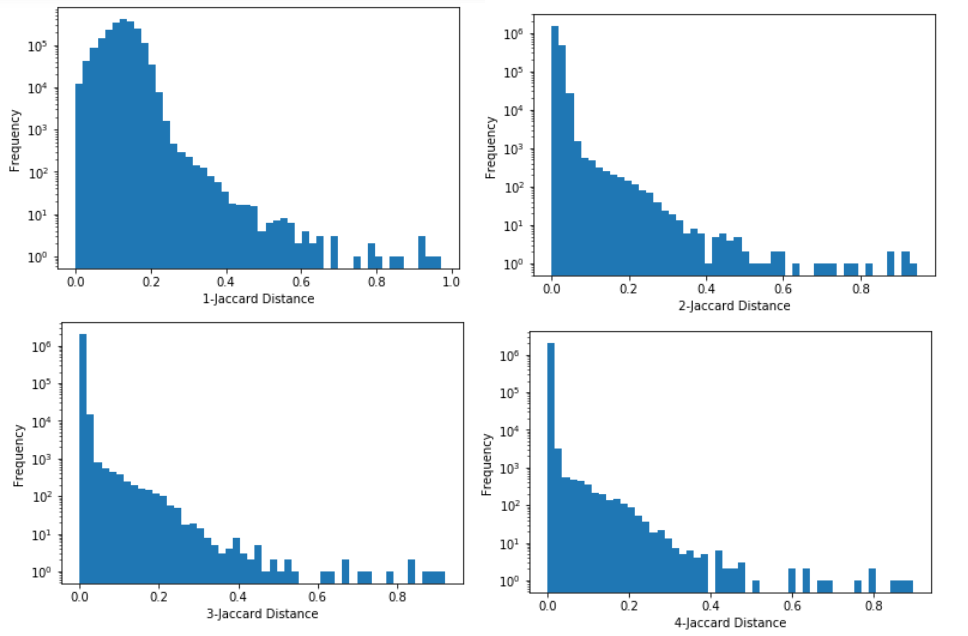
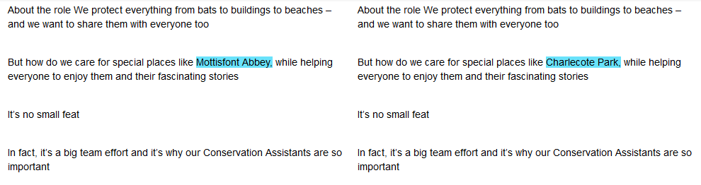
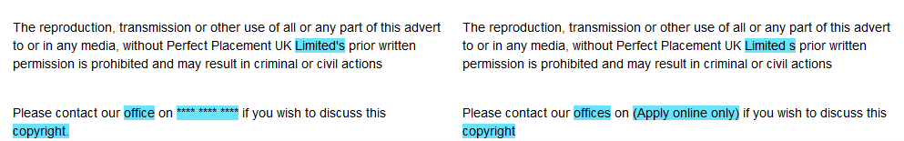

Near Duplicates with Jaccard
Finding near-duplicate texts is a hard problem, but the Jaccard index for n-grams is an effective measure that’s efficient on small sets. I’ve tried it on the Adzuna Job Salary Predictions Kaggle Competition with good success. This works pretty well at finding near-duplicates and even ads from the same company; although by itself it can’t detect duplicates.
I’ve looked before at using the edit distance which looks for the minimum number of changes to transform one text to another, but it’s slow to calculate. Instead we treat each document as a bag of n-grams (for some fixed n), and calculate the Jaccard index between them. So two documents will be similar if they contain the same phrases of length n tokens, irrespective of order.
How do we pick n? By the shingle inequality as we increase n the values will decrease, but it’s not clear at what value the data should be separated. Intuitively for n = 1 it’s just common terms For n = 1 it’s just common words and it is likely this isn’t very separating (different documents can contain common words); however it’s unlikely that two documents containing lots of phrases of length 5 or 6 in common are a coincidence. On the other hand errors in the data (e.g. punctuation or case being changed in one copy) that can break otherwise long identical sequences of tokens which means you don’t want to set n too big.
For the ads I took a random sample of 2000 ads (producing just under 2 million pairs) and looked at the distribution of the Jaccard values (with log frequency).

The histogram gets much more separated at n=2, then a little bit more at n=3 and is very similar at n=4. For somewhere to start I looked to see how the ads changes with length around n=4, looking at sets of 5 ads at different cutoffs.
For Jaccard similarities near 0.5 (around 6 ads per million pairs) and higher the ads are almost identical. This can happen because the ads are the same, or because a previous ad has been used as a template for a different location. These ads are identical except for their location; this kind of an example is going to be a challenge as to detect whether they are actually duplicates.

For Jaccard similarities near 0.1-0.2 (around 6 ads per 10,000) they seem to be from the same company. Many companies have the same description of themselves in every advert which will make their Jaccard distance and relative edit distance look quite low, even though the roles they are posting for are very different. Nearer to 0.1 there tends to be large recruiters because they tend to have more generic job descriptions.

For Jaccard similarities near 0.05 the ads are typically unrelated. However they have some phrase in common (often included from the site Adzuna got the job from).
At a glance seems like the Jaccard index on 4-grams was pretty effective of separating out unrelated jobs from jobs that had a common origin. Because few ads actually come from the same origin this means that it’s a pretty effective way of picking the few similar ads from a sea of different ads. Then further analysis can be done on these ads to determine whether they are actually similar.
It’s a bit hard to work out where exactly to draw the line, but somewhere between 0.2 and 0.5 seems about right. Note that the density will grow sparser as we add more ads because there will be fewer near-duplicate pairs relative to the number of non-duplicate pairs. For example if we add one more ad that’s a duplicate of 3 existing ads, we’ll end up with 3 more duplicate pairs out of a total of 2001 extra pairs.
I wonder if we can further separate the related ads from random ones by weighting the n-grams like with a TF-IDF so that uncommon sequences in the corpus appearing in both documents are weighted apart.
Implementation
The implementation is pretty straight forward, but scales quadratically. Given that the arithmetic complement of Jaccard distance (that is 1 - J) is a metric it may be possible to estimate distances with the triangle inequality to make this subquadratic. However the MinHash gives a way to find documents with a high Jaccard similarity very efficiently at scale.
First we need some functions for splitting sentences into tokens.
import re
whitespace = re.compile('\s+')
def tokenize(s:str) -> TokenList:
'''Split a string into tokens'''
return whitespace.split(s)
def untokenize(ts:TokenList) -> str:
'''Join a list of tokens into a string'''
return ' '.join(ts)Then we need a way to calculate the shingles of any length:
def subseq(seq:List[Any], n:int=1) -> List[Tuple[Any]]:
"""Returns all contiguous subsequences of seq of length n
Example: subseq([1,2,3,4], n=2) == [(1,2), (2,3), (3,4)]
"""
return [tuple(seq[i:i+n]) for i in range(0, len(seq)+1-n)]
def shingle(seq:List[str], n:int=1) -> List[str]:
return [untokenize(s) for s in subseq(seq, n)]I’m going to treat the text as a bag, to represent it as a set I need to add an index for each time a term is seen:
def multiset(xs):
seen = defaultdict(int)
output = set()
for item in xs:
output.add((item, seen[item]))
seen[item] += 1
return outputFinally I need a way of calculating the Jaccard index: \(\frac{\lvert A \cap B \rvert}{\lvert A \cup B \rvert}\). Using the inclusion-exclusion principle this can be calculated without the time consuming step of calculating the union.
def fast_jaccard(x, y):
n = len(x.intersection(y))
return n / (len(x) + len(y) - n)Finally we can calculate by looping (since it’s symmetric and the Jaccard intersection of anything by itself is 1 we only need to consider the case i < j):
shingle_lengths = [1, 2, 3, 4, 5, 6, 7]
sample_rel_weighted = {}
ads_tok = {i: tokenize(ads[i]) for i in sample_indices}
for k in shingle_lengths:
ads_shingle_weighted = {i: multiset(shingle(v, k)) for i, v in ads_tok.items()}
sample_rel_weighted[k] = {}
for i in sample_indices:
for j in sample_indices:
if i < j:
sample_rel_weighted[k][i, j] = fast_jaccard(ads_shingle_weighted[i], ads_shingle_weighted[j])On my laptop for each shingle length with sample_indices having length 2000 it takes about 15s. To run it on the full 400k would take about 8 days (because of quadratic scaling). This is much better than edit distance which would have taken over 30 years, but is still pretty slow. If we wanted to get more precise distances for very close ones we could run edit distance on those with a high Jaccard.
Another problem is memory to store all the distances; for our sample of 2000 we have nearly 2 million pairs and so the distances (as 8 byte floats) take up about 16MB. For our full 400k it would take around 640GB of memory (which is definitely beyonb my laptop!) However if we just wanted to keep the ones that are very close that is tractable, since they would be relatively few.
There are two directions to go from here, one is to try to get better overlaps with TF-IDF and another is to scale up the process with MinHash.